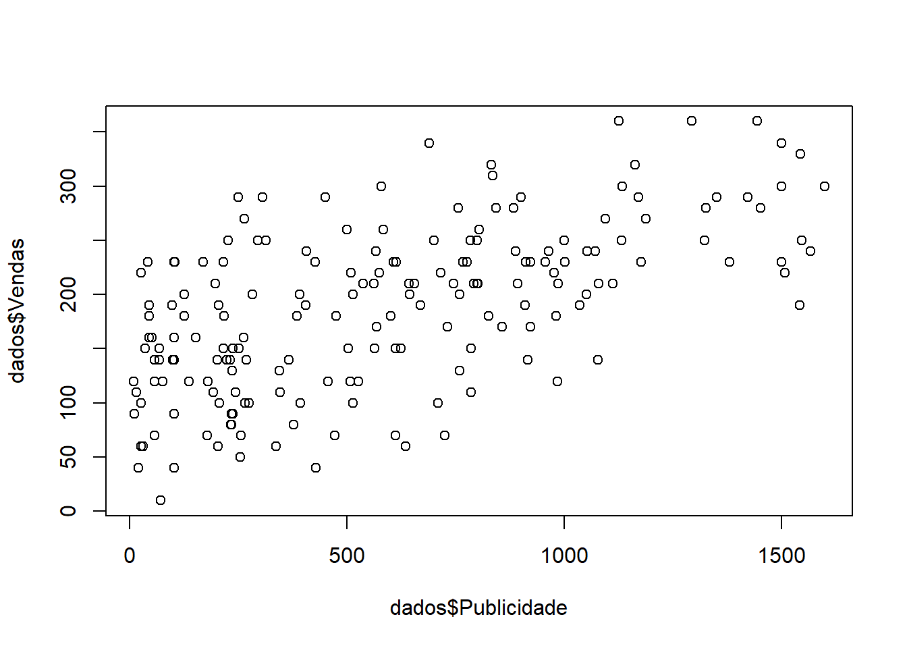
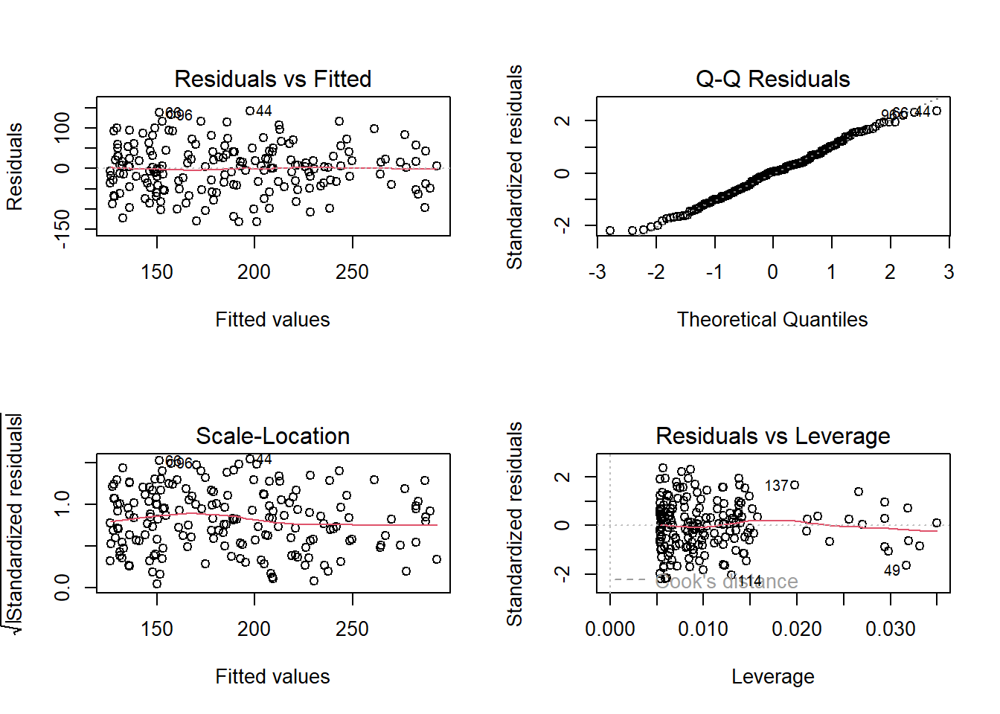
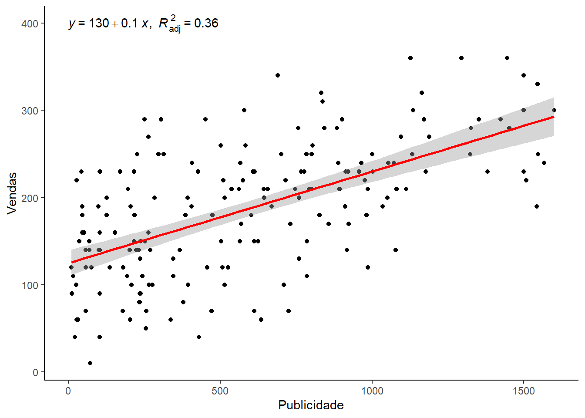

library(pacman)
# Essa função faz o download dos pacotes que não temos e depois carrega eles (se já tivermos os pacotes baixados, essa função já carrega os pacotes)
pacman::p_load(dplyr, ggplot2, car, rstatix, lmtest, ggpubr, here, readr)Regressão Linear Simples
Regressão Linear Simples
R.L simples é o modelo de regressão que contém apenas uma única v. independente. Vamos ter, então, uma v. independente, uma v. que queremos prever e uma v. dependente.AA
Carregando pacotes
Importando a base de dados
dados <- read.csv2("dados/Banco_de_Dados_11.csv")Essa base contém informações de 200 CDs comercializados por uma gravadora. A ideia é verificar se o gasto em publicidade é capaz de prever a venda de CDs.
# Visualiando as variáveis
glimpse(dados)Rows: 187
Columns: 2
$ Publicidade <dbl> 985.69, 1445.56, 1188.19, 574.51, 568.95, 471.81, 537.35, …
$ Vendas <int> 120, 360, 270, 220, 170, 70, 210, 200, 70, 150, 190, 240, …Verificação dos pressupostos para a regressão linear
A validade do modelo de regressão linear depende da satisfação de alguns pressupostos.
Relação linear entre a variável dependente e a independente
É necessário existir uma relação linear entre a VD e a VI. Em nosso exemplo, temos:
V. dependente: variável que queremos prever (venda)
V. independente: variável que imaginamos influenciar a venda (publicidade)
Para verificar a linearidade, podemos plotar a relação entre nossas variáveis em um gráfico.
plot(dados$Publicidade, dados$Vendas)
Aparentemente, nossas variáveis apresentam uma relação linear. No entanto, a interpretação do gráfico acima é uma pouca subjetiva.
Vamos ver outra maneira de verificar graficamente a linearidade das variáveis. Para isso, no entanto, vamos ter que criar nosso modelo de regressão linear.
Construção do modelo
A função lm() é uma função de regressão linear (linear model). A sintaxe dessa função é a seguinte: lm(variável dependente ~ variável independente, data = dados)
# Criando nosso modelo
mod <- lm(Vendas ~ Publicidade, data = dados)Análise gráfica (para verificar os pressupostos)
O código abaixo plota quatro gráficos que nos ajudarão a analisar os pressupostos.
# Plota os quatro gráficos numa mesma imagem
par(mfrow = c(2,2)) # 2,2 = 2 linhas e 2 colunas
plot(mod)
Para uma interpretação detalhada: https://library.virginia.edu/data/articles/diagnostic-plots.
1. Residuals vs Fitted
Gráfico dos resíduos pelos valores previstos que permite analisar a linearidade e a homocedasticidade.
Linearidade: verificarmos a lineralidade pela linha vermelha. Se ela estiver aprox. horizontal, temos uma relação linear
Homocedasticidade: homogeneidade de variâncias. Existe homocedasticidade se a dispersão de pontos no gráfico é constante ao longo dos valores previstos de \(y\) (eixo x do gráfico, fitted values)
Se não existisse homocedasticidade das variancia, teríamos heterocedasticidade
2. Normal Q-Q
Permite ver se os residuos tem distribuição normal
- Eixo y: os residuos padronizados
- Eixo x: os resuiduos teóricos (residuos esperados caso a dist. fosse normal)
Os residuos tem distribuição normal se os pontos estão em cima da reta pontilhada do grafico
3. Scale-Location
Gráfico mais recomendado para verificar a homocedasticidade. Caso exista homocedasticidade, a linha vermelha deve ser aproximadamente horizontal.
- Eixo y: raiz quadrada dos residuos padronizados
- Eixo x: os valores previstos
4. Residuals vs Leverage
Permite verificar se existe resíduos outliers e se existe pontos de alavangagem.
Pressuposto da regressão linear: não deve existir resíduos outliers (mas até tudo bem se tiver).
O que não pode acontecer é existir residuos outliers que são pontos influentes ou ponto de alavancagem (pontos que são tão outliers que estão influenciando a estimação). Existe outlier se existirem residuos abaixo de -3 ou acima de 3.
Existem pontos de alavancagem se existirem residuos padronizados fora da linha vermelha pontilhada. Além disso, o R vai colocar um número de id em cima do residuo que foge do pdrão.
Testes (para verificar os pressupostos)
Vamos, agora, plotar um gráfico de cada vez.
# a partir de agora cada plot vai ter apenas um grafico
par(mfrow = c(1,1))1. Normalidade dos resíduos (shapiro.test)
O pressuposto da regressão linear é de normalidade dos resíduos e não das variáveis. Portanto, vamos fazer um teste de normalidade em cima dos resíduos.
shapiro.test(mod$residuals)
Shapiro-Wilk normality test
data: mod$residuals
W = 0.99193, p-value = 0.3856- H0: dist. = normal -> p > 0.05
- H1: dist. != normal -> p <= 0.05
2. Outliers nos resíduos
# Faz para cada um dos casos
rstandard(mod)# Faz um resumo geral (mais interessante!)
summary(rstandard(mod)) Min. 1st Qu. Median Mean 3rd Qu. Max.
-2.1981347 -0.7064734 0.0392186 -0.0000075 0.6828619 2.3753897 Com esse resumo, é possível verificar que os resíduos não são menores que -3 e nem maiores que 3. Além disso, é um bom indicativo o fato da mediana estar próxima de 0 (zero).
3. Independência dos resíduos
Existe uma literatura que vai dizer que satisfazer esse pressuposto é necessario somente se vamos fazer uma anailse longitudinal.
durbinWatsonTest(mod) lag Autocorrelation D-W Statistic p-value
1 -0.01039454 1.98891 0.884
Alternative hypothesis: rho != 0D-W Statistic: deve estar próxima de 2 para existir independência dos residuos tem que estar entre 1 e 3
P-value: está verificando a correlação entre os residuos
- p-value > 0.05: não rejeitar a hipótese nula
- p-value < 0.05: rejeitar a hipótese nula
Hipóteses nula e alternativa:
- H0: corr = 0
- H1: corr != 0
Para satisfazer esse pressuposto queremos p-value > 0.05
4. Homocedasticidade (Breusch-Pagan)
- H0: existe homocedasticidade -> p > 0.05
- H1: NÃO existe homocedasticidade -> p <= 0.05
bptest(mod)
studentized Breusch-Pagan test
data: mod
BP = 1.4245, df = 1, p-value = 0.2327Análise do Modelo
summary(mod)
Call:
lm(formula = Vendas ~ Publicidade, data = dados)
Residuals:
Min 1Q Median 3Q Max
-131.840 -42.283 2.344 40.945 142.455
Coefficients:
Estimate Std. Error t value Pr(>|t|)
(Intercept) 125.17951 7.43140 16.84 <2e-16 ***
Publicidade 0.10495 0.01021 10.28 <2e-16 ***
---
Signif. codes: 0 '***' 0.001 '**' 0.01 '*' 0.05 '.' 0.1 ' ' 1
Residual standard error: 60.14 on 185 degrees of freedom
Multiple R-squared: 0.3634, Adjusted R-squared: 0.36
F-statistic: 105.6 on 1 and 185 DF, p-value: < 2.2e-161. Intercept
- Valor de Y quando X é zero
- Interpretando: Mesmo que eu invista 0 em publicidade eu posso esperar uma venda de CDs de 125
2. Beta (Publicidade)
- A cada 1 real gasto em publicidade temos um aumento de 0.10495 em vendas (em média)
3. Pr(>|t|)
Baseado no teste t value
3.1 t-value
- H0: coef = 0 -> p > 0.05 (VI não influencia VD)
- H1: coef. != 0 -> p <= 0.05 (VI influencia VD)
4 R-squared
- Interpretamos como uma porcentagem
- 0.3634 significa 36%
- O quanto o modelo explica a variável dependente
- O investimento em publicade explica 36% das vendas
5. Adjusted R-squared
- É mais importante para reg. linear multipla
6. F-statistic
- Compara o modelo que criamos com um modelo nulo (sem previsor nenhum)
105.6 on 1 and 185 DFp-value: < 2.2e-16
Hipóteses:
- H0: modelo criado preve tao bem quanto o modelo nulo -> p > 0.05
- H1: existe uma diferenca enrte esses modelos -> p <= 0.05
p < 0.05 existe diferença entre os modelos
Gráfico de dispersão
dados |>
ggplot() +
# É padrão que a VD esteja no eixo X e a VI no eixo Y
aes(x = Publicidade, y = Vendas) +
geom_point() +
# Plot a linha do modelo
geom_smooth(method = "lm", col = "red") +
# Coloca a equação do modelo e o R^2
stat_regline_equation(aes(
label = paste(..eq.label.., ..adj.rr.label.., sep = "*plain(\",\")~~")
),
label.x = 0, label.y = 400
) +
theme_classic()Warning: The dot-dot notation (`..eq.label..`) was deprecated in ggplot2 3.4.0.
ℹ Please use `after_stat(eq.label)` instead.`geom_smooth()` using formula = 'y ~ x'